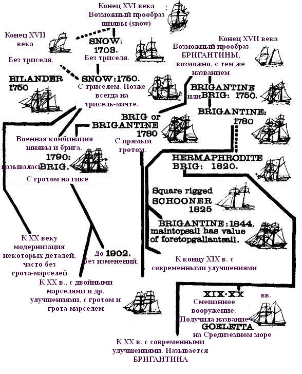
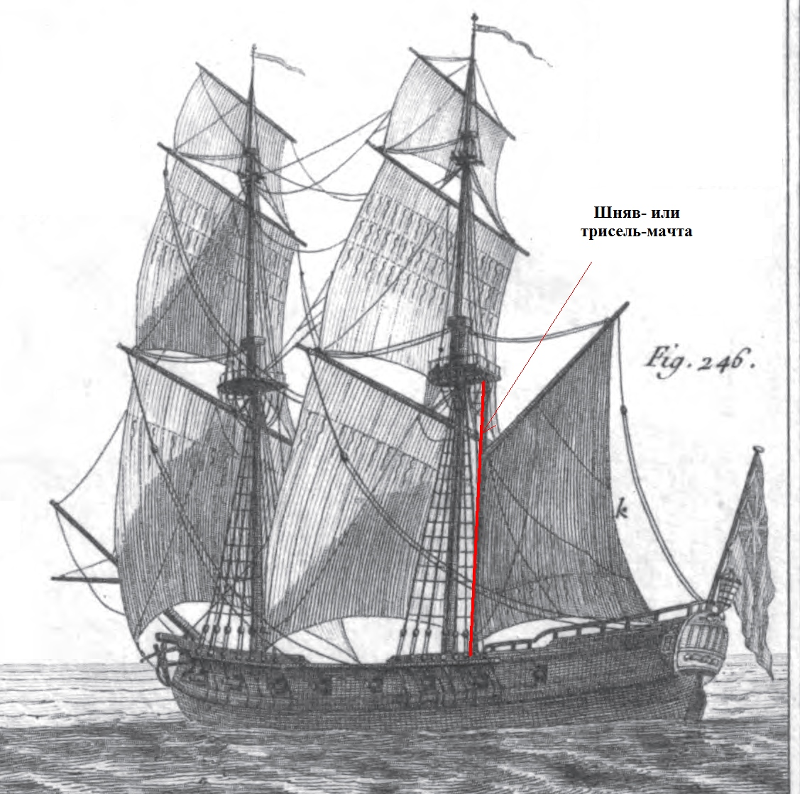
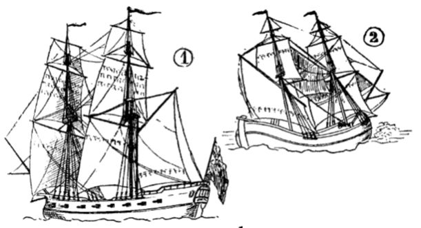
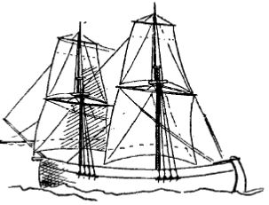
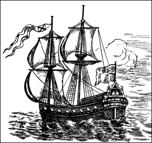
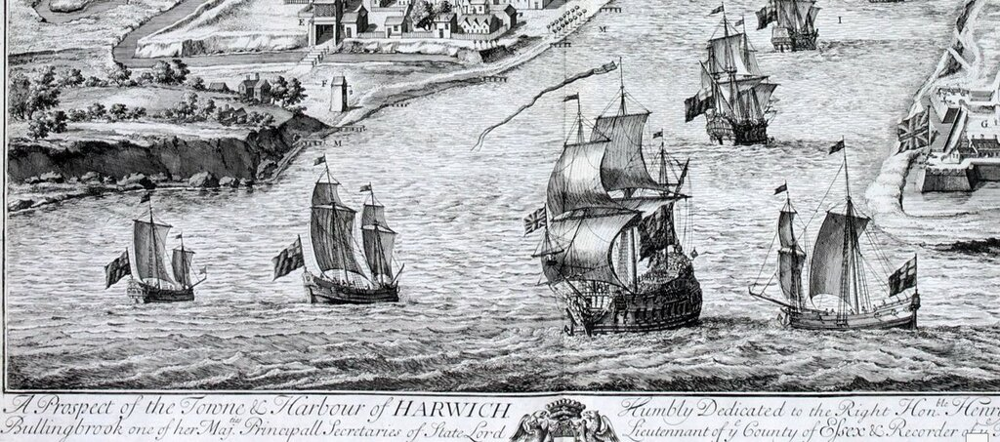

Добавим к нашим историческим и филологическим изысканиям несколько технических штрихов.
Что объединяет бриг и бригантину?
Во-первых, это двухмачтовые суда; во-вторых, это суда по преимуществу с прямым парусным вооружением. Помимо брига и бригантины в эту группу можно отнести шняву (англ. snow, франц. senau), биландер и некоторые другие типы судов, которые, с небольшими натяжками, можно считать родоначальниками двухмачтовых кораблей с прямым парусным вооружением.
Вот какое «генеалогическое древо» двухмачтовых судов предложил морской историк Алан Мур (1912)

Удивительно, но двухмачтовые корабли появились сравнительно поздно.
Естественным казался бы переход от одномачтовых средневековых судов сначала к двухмачтовым, а затем к трехмачтовым, но в действительности этот процесс протекал по-другому. От кораблей с одной мачтой переход совершался сразу к трехмачтовым. В XVI-XVII вв. доля двухмачтовых судов с прямыми парусами была исчезающе мала. И такое положение сохранялось на протяжении почти полутора веков.До 1650 года трудно было обнаружить корабль без бизань-мачты.
Без сомнения, попытки строить суда с двумя мачтами предпринимались, но форма корпуса кораблей той эпохи и устойчивая традиция ставить грот-мачту точно посредине длины корпуса делали такие корабли плохо управляемыми.
Информация о двухмачтовых парусниках с прямым вооружением в виде изолированных рассеянных сведений встречается еще до 1600 года. Однако отнести их к какому-то определенному типу сложно
На приведенной выше схеме мы видим, что практически одновременно появились два вида двухмачтовых парусников с прямым вооружением: биландер (или биландр) и шнява (сноу).
Биландер – это двухмачтовое купеческое судно каботажного плавания, первоначально появившееся в Нидерландах, а затем воспринятое англичанами и французами. О том, что это было судно прибрежного плавания свидетельствует уже само его название: bijlander (bij – рядом, land – суша)
Первоначально это были небольшие одномачтовые посудины, о которых писал еще Фурнье в своей Hydrographie (1667 г.) Однако уже у Фалконера мы встречаем подробное описание биландера с двумя мачтами.
BILANDER, (bilandre, Fr.) a small merchant-ship with two masts.
The BILANDER is particularly distinguished from other vessels of two masts by the form of her main-sail, which is a sort of trapezia, the yard thereof being hung obliquely on the mast in the plane of the ship's length, and the aftmost or hinder end peeked or raised up to an angle of about 45 degrees, and hanging immediately over the stern; while the fore end slopes downward, and comes as far forward as the middle of the ship. To this the sail is bent or fastened; and the two lower corners, the foremost of which is called the tack and the aftmost the sheet, are afterwards secured, the former to a ring-bolt in the middle of the ship's length, and the latter to another in the tassarel.
Биландер – небольшое двухмачтовое купеческое судно.
Основным отличием биландера от других двухмачтовых судов является трапецевидная форма его грота, рей которого подвешен наклонно в диаметральной плоскости корабля так, что кормовой конец его, поднятый под углом 45°, находился непосредственно над гакабортом. Носовая часть рея находился у палубы в районе мидель-шпангоута. Верхняя кромка паруса пришнурована к этому рею, а нижние углы его крепились к обухам: носовой конец. который назывался галсом, к обуху на палубе, а кормовой конец – шкот – к обуху на транце.
Это определение Фалконера повторялось с небольшими вариациями практически всеми авторами последующий поколений, в том числе и известым немецким морским историком Марквардтом, от которого практически в неизменном виде перекочевало в русскую Википедию. Непонятно, правда, по какой причине вслед за переводчиком книги немецкого автора в Википедии выбрана форма термина с двумя л – «билландер», не свойствнная сложившейся русской традиции (Бутаков, Вахтин и др.)
Время, когда появись первые шнявы с прямым парусным вооружением, также сейчас трудно установить. Приблизительно можно считать, что это случилось около 1700 года. По крайней мере, появление триселя вряд ли произошло раньше изобретения гафеля и гика, которые появились во второй половине XVII века.

Интересное сравнительное изображение шнявы и биландера мы можем найти в словаре Лескалье (Lescallier, Daniel (1743-1822). Vocabulaire des termes de marine anglois-françois et françois-anglois, 1777).

1. Шнява (snow). 2. Биландер
Здесь сразу же видно отличие в парусном вооружении шнявы и биландера. Если у биландера вместо грота находился косой парус на наклонном рю, точь-в-точь как бизань на трехмачтовых кораблях той эпохи, то у шнявы прямой грот остался, косой же трисель размещался на небольшой трисель-мачте, установленной на небольшом расстоянии в корму от грот-мачты.
К сожалению, историю появления трисель-мачты в деталях проследить не удается. Алан Мур (Alan Moore (1912) THE SNOW, The Mariner's Mirror, 2:2) выдвинул гипотезу, что первоначально с трехмачтового корабля просто убрали бизань-мачту.

«Недостающее звено» в эволюции двухмачтовых парусников (ок. 1700) по А.Муру.
Достоверных изображений этого «недостающего звена» в эволюции шнявы не обнаружено. Делались попытки отнести к этому «недостающему звену» известный русский корабль, построенный по проекту Петра I – шняву «Мункер» (The Mariner's Mirror, 2:6, 1912), спущенную на воду в 1704 году.

Питер Пикарт. Шнява «Мункер» на офорте «Боевые порядки русского флота на пути к Выборгу в мае 1710 года», 1711 год
Но помимо упомянутого офорта и его воспроизведения в книге Ф.Ф.Веселаго «Очерк русской морской истории» (1875) существует большое количество других изображений этой шнявы, в том числе и с триселем, так что на роль «недостающего звена» она вряд ли тянет.
Двухмачтовые корабли лишь с прямыми парусами без косых парусов мы встречаем на гравюрах Яна Кипа

Фрагмент гравюры Яна Кипа (Johannes Kip), озаглавленной «A Prospect of the Town & Harbor of Harwich» (рисунки относятся к периоду между 1690 и 1710 гг, гравюра опубликована ок. 1725 г.)
Однако, это скорее разновидности малых флейтов, флиботы, не имеющие отношения к шняве.
Некоторые следы дальнейшей истории шнявы мы можем обнаружить во французском флоте. Во второй половине XVIII века там, наряду со сноу (senau) появляется сноу-бриг (senau brique) или лангар (langar). Статья об этом типе корабля помещена в Энциклопедии (Encyclopedie Methodique. Marine. 1786)
LANGAR ou senau brique, s. m. le langar diffère du brigantin, en ce que son grand mât est ordinairement moins incliné; mais principalement parce qu'il a une grande voile quarrée, & indépendamment de sa voile du gui: c'eft aussi, si l’on veut, un senau , dont l'artimon est bordé sur un gui, & qui , au lieu d'être gréé sur une gaule , l'est sur le grand mât , le long duquel il s'amène.
Лангар или шнява-бриг. Лангар отличается от бригантины тем, что его грот-мачта обычно наклонена меньше; но главное отличие в том, что у него есть прямой грот и независимый от него гафельный парус (парус с гиком): это, если угодно, та же шнява, трисель которой растянут по гику и вместо того, чтобы крепиться к трисель-мачте, крепится к грот-мачте, вдоль которой и скользит вверх и вниз.
Мы видим, таким образом, что лангар – это уже практически бриг.
Приведенные выше примеры эволюции двухмачтовых судов дают нам основание, перефразировав Дарвина («Natura non facit saltus» - Природа не делает скачков), заявить Nauta non facit saltum – все изменения накапливаются постепенно, являясь следствием последовательных модификаций.
Мы еще вернемся к этой теме в дальнейшем.